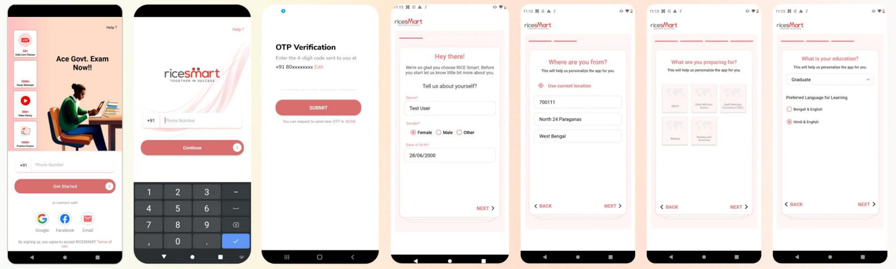

01
Self Quiz
A self-quiz feature lets a user create a quiz for themselves with AI: just add the subject, topic name and number of questions. The quiz is generated instantly and can be shared with friends, so they can see who did better.
Case Study · Mar 2024
Onboarding, Chatbot & Self Quiz
Three modules I designed for a 100K+ download EdTech app: a shorter onboarding, a chatbot for doubts, and a self quiz.
Overview
EdTech app
on the Play Store
RICE Smart is an EdTech app built around live doubt-clearing sessions. I worked on three of its modules: a shorter onboarding, a chatbot for doubts, and a self quiz. I did not design the whole app.
My Contribution
Product designer. Onboarding and Self Quiz: solo. Chatbot: with a Product Manager, who helped with brainstorming and requirements.
Onboarding redesign: 3 weeks, across several onboarding modules.
Onboarding: a UI/UX audit, competitor analysis and redesign. Chatbot: the flows and screens for asking doubts. Self Quiz: create, take, share and compare quizzes, added on top of the existing My Activity section.
Onboarding · The Problem
On the landing screen, illustration covers about 60% of the space and the bottom half is text-heavy. Tapping the phone-number box sends the user to a different screen, which can misguide them.
Users fell from 25.87% to 22.49% after the OTP step, at the personal-details screen, where last name, gender and date of birth were all mandatory.
Of the 22.49% who reached this step, 1.07% did not fill in these details. Exams were shown as tiles, and education was mandatory.
Onboarding · Before

Seven screens from landing to the app: landing, phone number, OTP, personal details, location, exam and education.
Onboarding · Competitor Analysis
The OTP is only triggered after the user has entered their details.
Name and phone number sit on the same screen, which cuts the number of clicks.
Many calls to action on the login screen, and multiple drop-downs on exam selection.
Google sign-in is prioritised over phone number, and the OTP is entered in a pop-up.
Onboarding · Recommendations
Less illustration and less text. Let people type the phone number on the screen itself, instead of being sent to another one.
Make last name, gender and date of birth optional, and replace demographic questions with a state or pin-code drop-down.
A list with a search bar instead of tiles.
Not mandatory.
Onboarding · After
Tap through the phone, or pick a step to jump there.
Chatbot · Problem Statement
RICE Smart offers doubt-clearing sessions, yet some users shy away from attending — several are simply too timid to engage in front of the class.
The challenge was to build a chatbot that could understand and respond to a wide range of questions across courses and subjects.
The bot should open the conversation itself by asking what a student was studying, rather than expecting them to know how to phrase a request for help.
Chatbot · Use Cases
After a weekly or monthly exam, students want to know exactly which areas to work on.
Users want to know their position in class to maintain healthy competition, plus performance by individual subject.
Some students hesitate to ask in front of a class — a chatbot lets them ask any question, anytime.
A user can ask the same question multiple times, though there’s a limited number of questions allowed per month.
One question can have multiple valid answers — e.g. Physics and Chemistry both cover Thermodynamics.
Users want to revisit what they asked earlier instead of retyping it.
Chatbot · Possible Solution
If a user asks a question they’ve asked before, they’re redirected straight to the earlier chat instead of getting a fresh answer.
The user is asked to specify the course and subject before the bot works on a solution.
A log and history of past questions is maintained, so a user can come back and check earlier answers anytime.
Chatbot · User Flow
RiceBot asks which course, then which subject, before the student writes anything.
A question asked before goes straight to the earlier chat; every answer is kept in a searchable log.
Chatbot · Redesign
Tap through the phone, or pick a step to jump there.
Self Quiz
01
A self-quiz feature lets a user create a quiz for themselves with AI: just add the subject, topic name and number of questions. The quiz is generated instantly and can be shared with friends, so they can see who did better.
02
My Activity already existed in the app: attendance, exams attempted, a class leaderboard and an exam summary. I did not design it. The Self Quiz was added as a feature on top of it.
Self Quiz · User Flow
Create a quiz from a subject, topic and number of questions; AI generates it instantly and it can be shared with friends.
Self Quiz · Redesign
Tap through the phone, or pick a step to jump there.
RICE Smart
A shorter way in, a judgement-free way to ask a doubt, and a quiz to check what you know and share it with friends.